1. ACID — The Four Guarantees
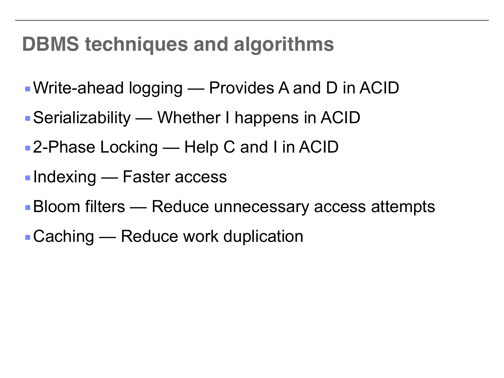
| Property | What it means | How it's enforced |
|---|---|---|
| Atomicity | All or nothing — no partial transactions | Write-Ahead Logging (WAL) |
| Consistency | Data stays valid (constraints hold) | 2-Phase Locking + app logic |
| Isolation | Transactions don't see each other's mess | Serializability / 2PL |
| Durability | Committed = permanent, even after crash | Write-Ahead Logging (WAL) |
2. The Four Concurrency Anomalies
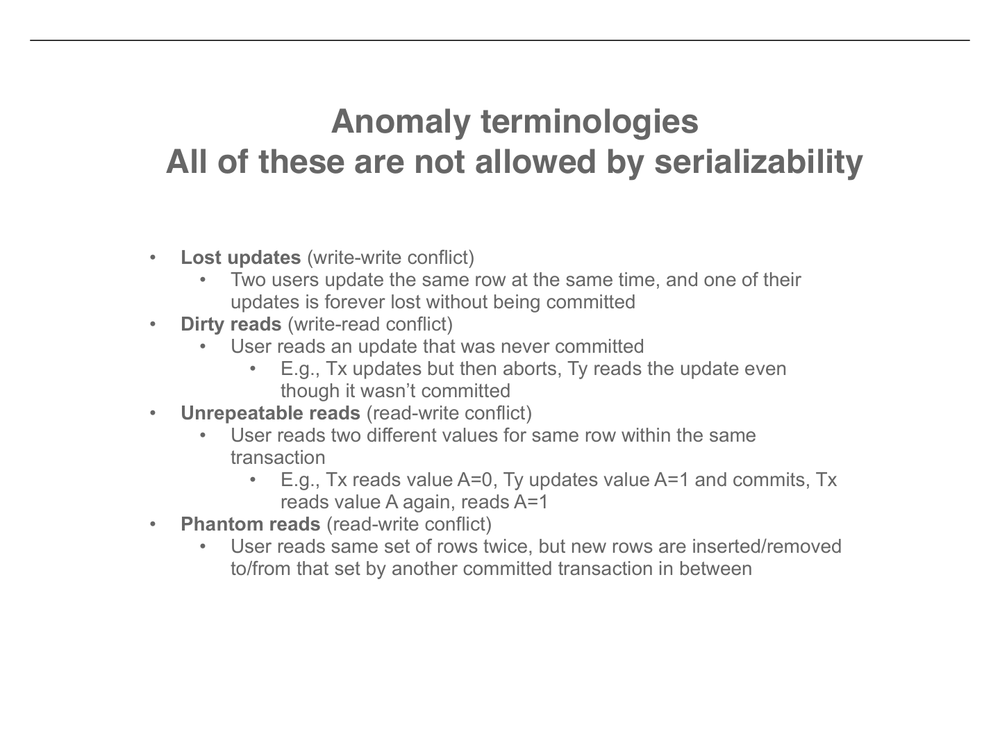
| Anomaly | Type | One-line explanation |
|---|---|---|
| Lost Update | Write-Write | Two writes to same row → one silently overwritten |
| Dirty Read | Write-Read | Reading data from an uncommitted (maybe aborted) transaction |
| Unrepeatable Read | Read-Write | Same row, two reads, different values (someone changed it in between) |
| Phantom Read | Read-Write | Same query, two runs, different set of rows (someone inserted/deleted) |
3. Conflict Serializability
What's a conflict?
Two operations from different transactions on the same data item where at least one is a write. (Two reads are never a conflict.)
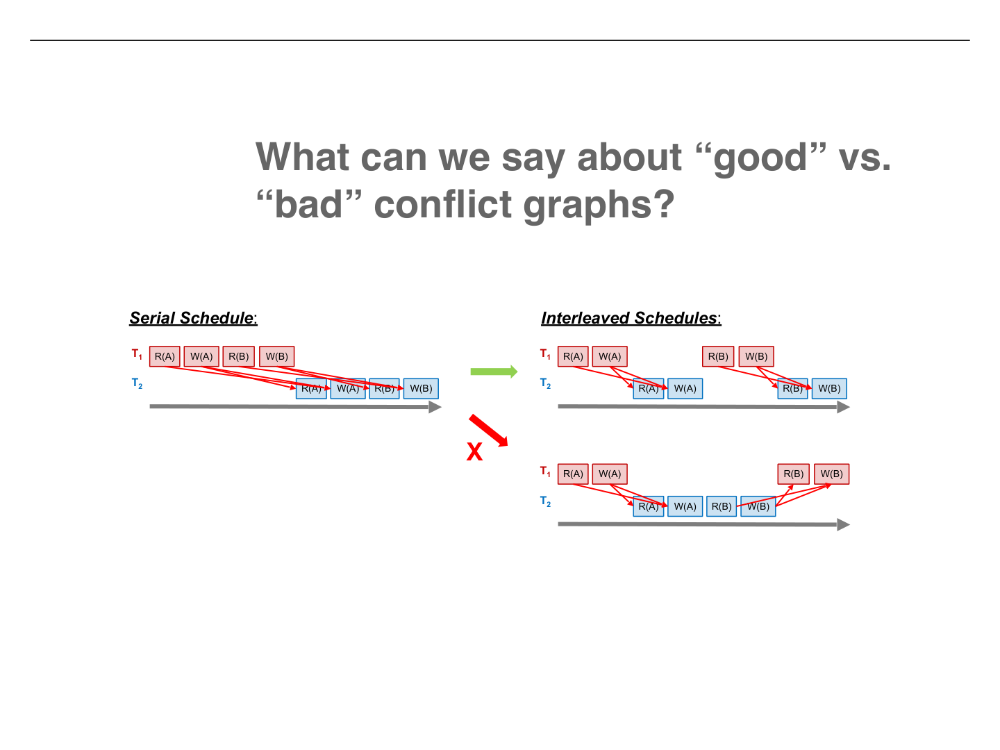
The 3-step test
- Find conflicts — scan for RW, WR, WW pairs on same data item between different transactions
- Build conflict graph — edge from Ti → Tj if Ti's conflicting op comes first
- Check for cycles — acyclic = conflict serializable. Topological sort gives equivalent serial order.
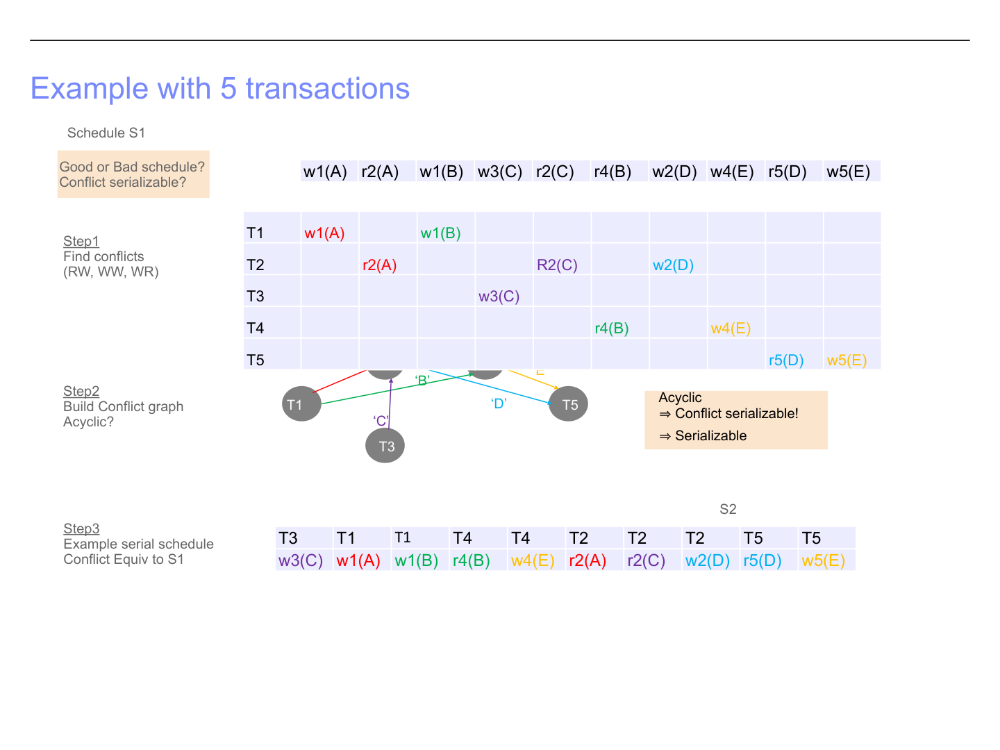
4. Two-Phase Locking (2PL)
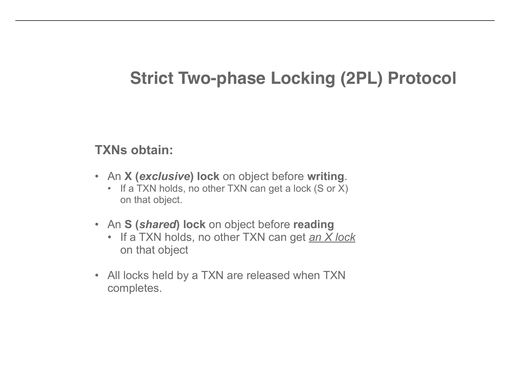
Lock compatibility (the key table)
| Request \ Held | None | S (Shared) | X (Exclusive) |
|---|---|---|---|
| S lock | Granted | Granted | WAIT |
| X lock | Granted | WAIT | WAIT |
Readers can coexist (S+S = OK). Writers need total exclusivity (X + anything = WAIT).
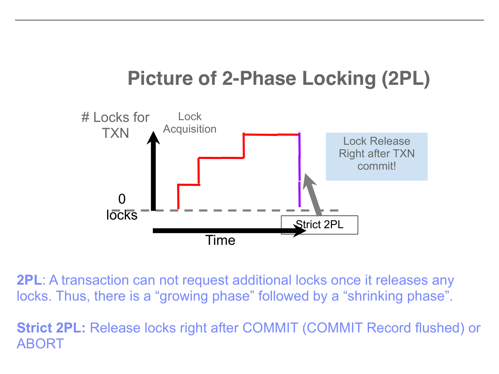
5. Deadlocks
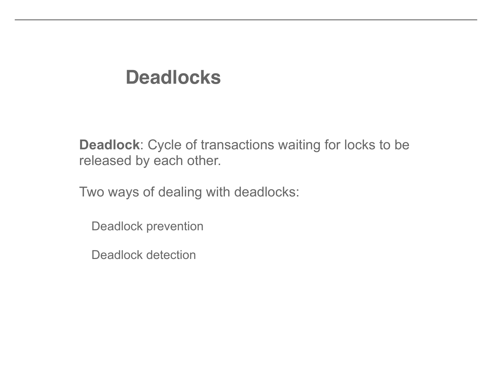
Three ways to handle deadlocks
Prevention: C2PL
Get all locks before starting. If you can't get all, release everything and retry. No deadlock possible, but hurts performance.
Detection
Let deadlocks happen. Periodically check waits-for graph for cycles. If found, abort one victim to break the cycle. Most common in practice.
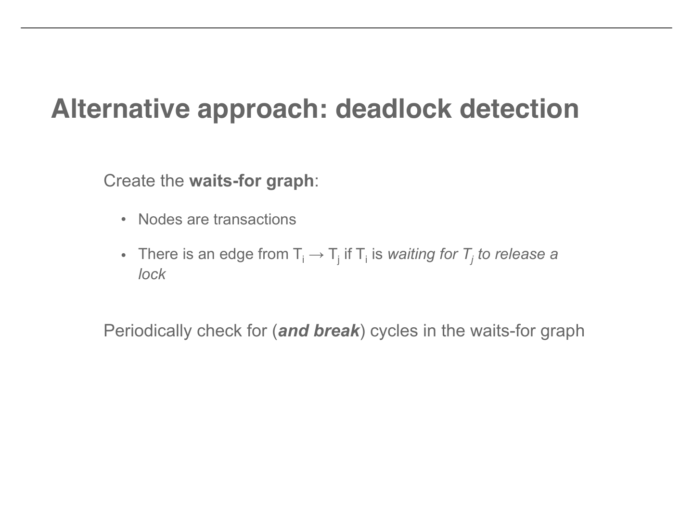
Wait-Die vs Wound-Wait (cheat sheet)
| Scenario | Wait-Die | Wound-Wait |
|---|---|---|
| Older requests lock from younger | Older waits | Younger aborts |
| Younger requests lock from older | Younger aborts | Younger waits |
| Why no deadlock? | Waits only go old→young (no cycle) | Waits only go young→old (no cycle) |
Key: Aborted transactions keep their original timestamp, so they get higher priority when they retry.
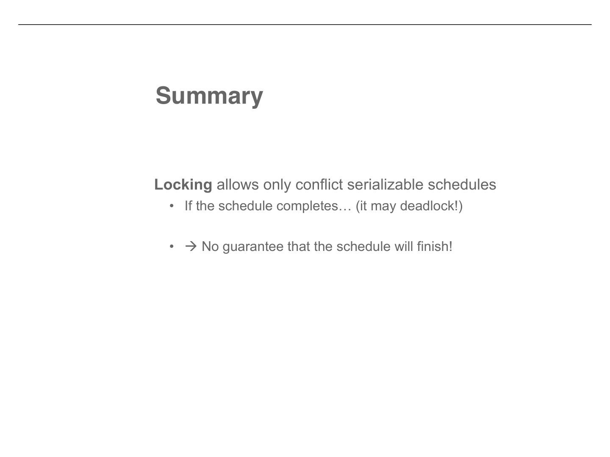
6. Isolation Levels
| Level | Dirty Read | Lost Update | Unrepeatable Read | Phantom |
|---|---|---|---|---|
| Read Uncommitted | Allowed | Allowed | Allowed | Allowed |
| Read Committed | Prevented | Allowed | Allowed | Allowed |
| Repeatable Reads | Prevented | Allowed | Prevented | Allowed |
| Serializable | Prevented | Prevented | Prevented | Prevented |
Strict Serializability
Even stronger than serializability: if transaction X finishes before Y starts, then X must come before Y in the equivalent serial order. 2PL naturally gives you this.
MVCC (Multi-Version Concurrency Control)
7. Indexing
Primary vs Secondary Index
Primary (Clustering)
Index order = physical data order. Only one per table. Can be sparse.
Secondary (Non-clustering)
Index order ≠ data order. Many per table. Must be dense (can't scan sequentially).
Dense vs Sparse Index
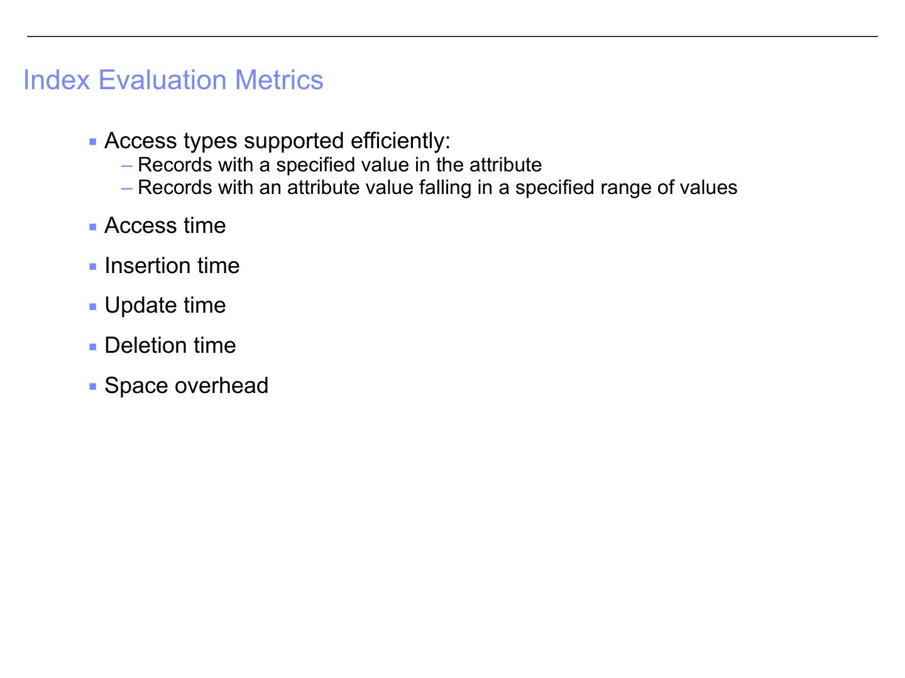
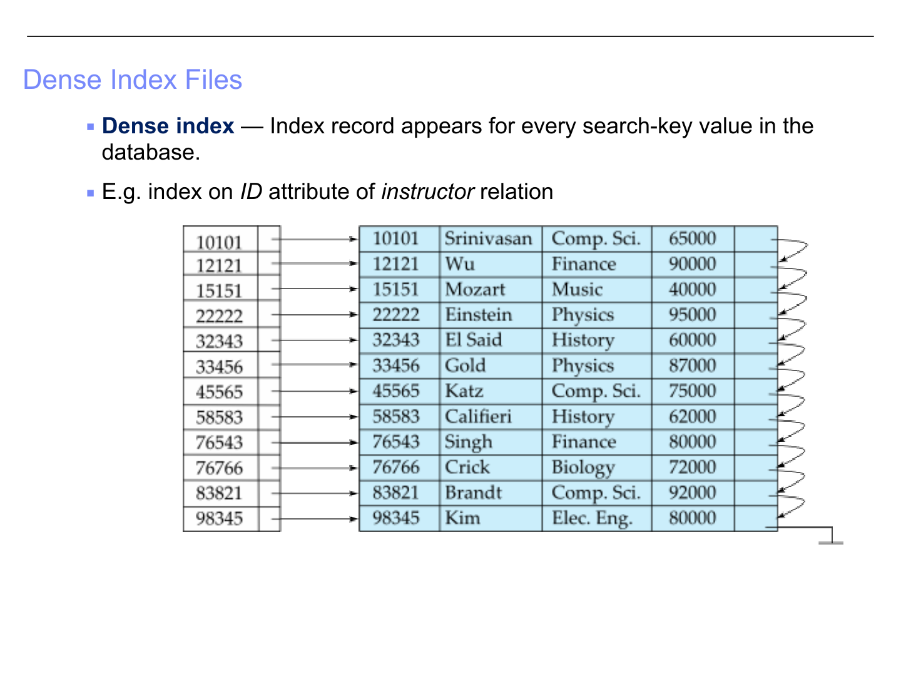
Dense Index
- Entry for every key value
- Fast lookup (direct pointer)
- More space + maintenance
- Works on any attribute
Sparse Index
- Entry for some key values
- Slower (need to scan within block)
- Less space + maintenance
- Only works if data is sorted by key
Secondary Index
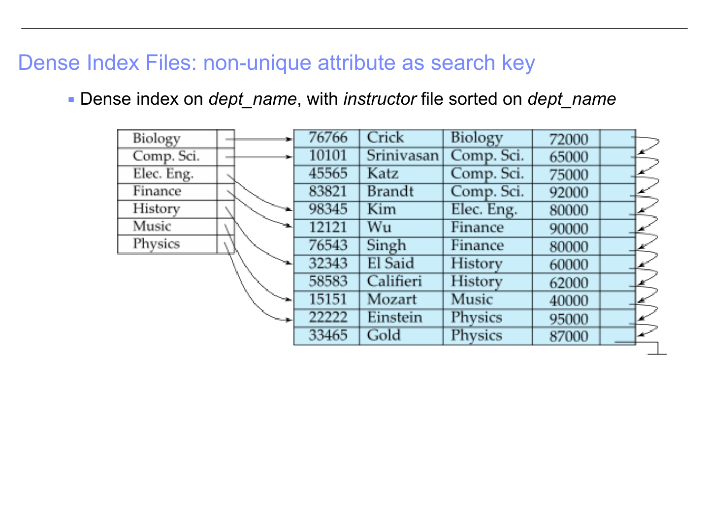
Multilevel Index
When the index itself is too big for memory: build an index on top of the index. The outer index is sparse, the inner index is the original. Add more levels if needed (this leads to B+ trees).
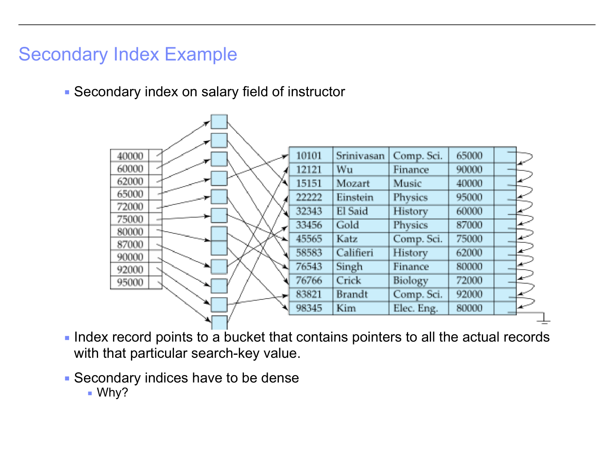
Quick Reference Cheat Sheet
| Concept | Remember this |
|---|---|
| ACID | Atomicity + Durability = WAL. Isolation + Consistency = 2PL/Serializability. |
| Conflict | Same data item, different transactions, at least one writes. (Read-Read = NOT a conflict) |
| Serializable | Conflict graph is acyclic → topological sort gives equivalent serial order |
| Strict 2PL | S before read, X before write, release all at commit. Guarantees serializability (if no deadlock). |
| S + S | OK (readers coexist) |
| S + X or X + X | WAIT (writers need exclusivity) |
| Deadlock | Cycle in waits-for graph. Fix: prevention (C2PL, Wait-Die, Wound-Wait) or detection. |
| Wait-Die | Old waits, young dies. Waits go old→young only. |
| Wound-Wait | Old wounds (kills) young, young waits. Waits go young→old only. |
| Read Committed | Most common real-world level. Prevents dirty reads only. |
| Dense index | Every key has an entry. Fast but large. Required for secondary indices. |
| Sparse index | Some keys only. Smaller but needs sorted data + sequential scan. |
| Multilevel index | Index on index. Leads to B+ trees. |